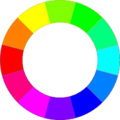
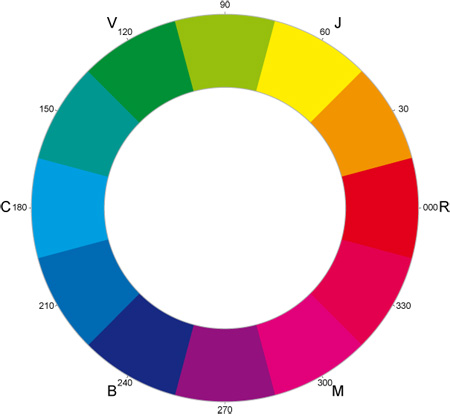

The color chartreuse is broadly remembered as a shade of red. Some recall it as a maroon-ish red. Others describe it as a reddish magenta.The fact is, in this timestream, the color is yellow-green. The color gets its name from the liqueur, Chartreuse.
However, I clearly recall a discussion with my mother, an artist, about the color chartreuse. I was a teen and used “chartreuse” to describe a magenta-ish dress. My mother couldn’t believe I was serious, and I remember looking in my childhood crayon box for a reddish crayon labeled “chartreuse,” but couldn’t find it.
It was a humiliating moment for me, because she was right and — in our household — that was like confusing Miro and Michelangelo. It just wasn’t done.
I didn’t think about it again until a comment about chartreuse appeared at this site. Then another did, and yet another. No matter how long I study this topic, I’m still astonished when a memory matches one of mine.
(Also, collecting comments for this article, I was amazed at how many there were. I’ve included many of them — not all — below, and apologize for the length of this article. I wanted to include enough to make it clear: This is a widespread alternate memory.)
Recent comments included the following.
In September 2014, Stephanie said:
I distinctly remember Chartreuse being a purple-pink color close to Magenta but a little darker. Less pink, more purple, but still too pink to be a true purple. I’m so confused??
In Oct 2014, Misty said:
…chartreuse was a dark red color…
Cas said:
I thought chartreuse was a rich sort of pinkish-magenta color?
I really thought chartreuse was a shade of red? Not green or yellow at all? When I clicked the Wikipedia link to see what color it is, I was so confused. I’m glad other people share in this confusion as well.
Seems like too pretty of a name for “lime green”. Ick. Doesn’t sit right with me.
I. K. said:
And yet the etymology makes perfect sense. Then again, that might be at the heart of the potential difference. So, if this Carthusian order, who’s liquor got the name associated with it, and lend itself to the name of the colour instead made a particular blend of red wine, perhaps Chartreuse would get a different colour association.
Honestly, without saying anything one way or the other on the matter, if I would have guessed without knowing, I’m certain I would have guessed it was a reddish colour. It does have the ring of a warm red drink to it.
(source: http://en.wikipedia.org/wiki/Carthusians)
One of the JMs (we have two) said:
Yeah the whole color changing business is a weird one.
Tee said:
I asked a friend of mine, what color she remembers Chartreuse being and she remembers it as always being the yellow/green color, but she also remembers it as being part of a series of colors spanning yellow/green to red/pink/purple, which is very interesting. I myself remember it being the red/pink/purple color only and not the yellow/green that it is now(that looks and sounds way off) nor as part of a series of colors that are in different color groupings.
Natalie said:
I’m shocked that chartreuse is now suddenly a shade of green. I always thought it was a reddy/purple colour too. I have a vague recollection of thinking that chartreuse sounded french, like a red wine, so it made sense. And now it’s green? WEIRD! The mind boggles.
Rebecca said:
I most definitely remember chartreuse as being a dark purplish pink colour. My mum laughed at me when she realised that was what I thought. I was astonished to find it’s actually a yellow-green.
I remember it as being similar to the crayon marked “scarlet red” in this image: http://www.crayoncollecting.com/ccolor29_files/image035.jpg
Could it be something to do with them being in the same collection? The similarities of the words “chartreuse” and “cerise”?
{kind=link}
jma said:
wow…
I remember a while back (maybe 12-15 years ago? I’m pushing 40 now) I was driving my car, describing something to my friend in the passenger seat and I used the word “chartreuse” . She was surprised and we ended up getting into a debate about the definition of chartreuse. I was shocked to learn that it was the color it is now (that yellow-green-aqua color)… and had to “eat-crow”, so to speak. BUT I had forgotten the color I previously thought it was, since I’ve known the “official” definition for so long. Upon reading your post, I realize the reddish color you describe is exactly the color I used to think it was.
Becca said:
I could have sworn that chartreuse was like a magenta colour. I remember watching (and yes, i know how this sounds) blues clues, and the guy went, red and purple make chaaaaarrtruuuuuuuuuse.
dm said:
I was more than positive chartreuse was a sort of purple color until a year or two ago.
Dani said:
Chartreuse was a pink color; I’ve ALWAYS associated chartreuse with pink (sort of a pinky-orange?), and never with anything green.
Jane said:
I have always been bothered by chartreuse not being a maroon color. It is NOT yellow-green, just no, that drives me crazy every time somebody mentions it! When I was younger, I would have sworn it was deep red/purple.
Rich said:
Had to make it all the way to the bottom [of the Major Memories comment thread] for someone to finally answer the Chartreuse question. And the whole time I was waiting for some one to say a pink/ashy purple. Glad someone else has a memory of that. the Chartreuse question. And the whole time I was waiting for some one to say a pink/ashy purple. Glad someone else has a memory of that.
Lea said:
I could have SWORN that… chartreuse was a reddish-brown color. What the heck?!
In November 2014, Emily said:
Chartreuse is a wine red, I’ve had that argument many times.
Omer said:
– I know chartreuse was a pinkish color; I was watching a Modern Marvels episode on firefighting and they were talking about how some fire trucks are starting to be painted in chartreuse instead of red because of the increased visibility. I was curious what a chartreuse firetruck would look like so I went looking for pictures online, at which point I found out that chartreuse was basically neon yellow. I distinctly remember how weird this experience was for me, especially because I had never before heard someone refer to “neon yellow” as “chartreuse”. (I was watching this sometime in 2005, so I learned about chartreuse sometime before then)
Saffie Kaplan said:
I definitely thought chartreuse was some sort of purple. I remember asking my mom about it, which was the first time I heard of it as a yellow-green.
Rachel Lynn said:
When I think of Chartreuse, for whatever reason, the first colour that popped into my head was a blue-green colour, followed closely by thinking “wait, or maybe a pink colour.” I feel more strongly that its a blue-green, but yellow-green would never have been a guess, and the more k think about it the more i swear that it was blue-green crayon and i’m tempted to go find old crayons and look.
Morgan said:
Both my mom and I remember the color Chartreuse being a pinkish-purple color, almost like a neon purple. but most definitely not a yellow-green color.
Early in 2015, Hannah Carr said:
I swear to god chartreuse was like a dark red.
Chris said:
I also remember chartreuse as being a purple-ish color
Elise said:
Chartreuse is not yellow-green. It’s an orange fiery-red. I’m a synesthete with words and music. I had huge crayon boxes because I could not spell or write if words were not in the “correct” color (I couldn’t understand why other children didn’t get confused when, for instance, teachers wrote in colored chalk on the chalk board but wrote complete sentences in 1 color!). Luckily my gifted teacher researched my instances and realized it as synesthesia. She encouraged me to color code (which is the fist time I really understood math) and it allowed me to learn different languages at a young age (words which have the same meaning in another language represent in the same color – unlike music which seems to represent based on tonal sound).
All this to say that the word “aerospace” is a chartreuse word. In German the word “Raumfahrt” is also a chartreuse word. Both are a fiery orange-red.
Another Rachel said:
I used to think chartreuse was a dark red or burgundy color.
Cameron said:
Oh dear lord, i’m not alone. My whole life i thought Chartruese was a deep red or purple. I considered it my favorite color for a long time. It wasn’t until my sophmore year in highschool that i found out it was a light yellow or green. My best friend was ordering her dress and wanted my opinion. She said that she was getting it in Chartruse and i told her that was the one I thought would look nice, but the only picture she has was this gross pukey yellow and i said, “i’m glad you’re getting a different color than in the picture, because that is an awful color”. She then corrected me that the one pictured was the Chartrues one. I guess, all along the color i thought i loved was actually Mauve?
Donna said:
Yes chartreuse was a maroon-red color. It was only a couple years ago that I saw a crayon marked chartreuse and it was this awful green-yellow color, and I thought that Crayola must have made a mistake!
If you’d like to add a comment, you can use the numbers on the following color wheel to indicate the color you recall as chartreuse.

I really thought chartreuse was a shade of red? Not green or yellow at all? When I clicked the Wikipedia link to see what color it is, I was so confused. I’m glad other people share in this confusion as well.
Seems like too pretty of a name for “lime green”. Idk. Doesn’t sit right with me.
And yet the etymology makes perfect sense. Then again, that might be at the heart of the potential difference. So, if this Carthusian order, who’s liquor got the name associated with it, and lend itself to the name of the colour instead made a particular blend of red wine, perhaps Chartreuse would get a different colour association.
Honestly, without saying anything one way or the other on the matter, if I would have guessed without knowing, I’m certain I would have guessed it was a reddish colour. It does have the ring of a warm red drink to it.
(source: http://en.wikipedia.org/wiki/Carthusians)
I was more than positive chartreuse was a sort of purple color until a year or two ago.
I have always been bothered by chartreuse not being a maroon color. It is NOT yellow-green, just no, that drives me crazy every time somebody mentions it! When I was younger, I would have sworn it was deep red/purple.
Jane, I’m on the same page as you, and with a very solid context. My mother was an artist… went to university for art, graduated, taught art, and so on. I grew up surrounded by color wheels, tubes of paint, and all the crayon colors Crayola ever made. (My mother was very keen on me becoming an artist, too.)
So, I know chartreuse was a reddish color. In fact, it was one of my favorite colors, and it still is… as a purplish-red, that is.
Then, one day when I was in my late teens or early 20s, I was describing something sort of magenta to my mother, and I said, “You know, kind of magenta-chartreuse.”
And, she looked at me and blinked. Then she asked how something could be yellow-green and a reddish-purple at the same time.
It’s a memory that stayed with me, and I had no explanation until I stumbled onto the Mandela Effect, and the topic of chartreuse was raised.
Among all the Mandela Effect memories, this one stands out as the most surprising when other people share that memory, too.
Thanks for your comment… and for comments by everyone who has this memory. It’s startling but also affirming.
Cheerfully,
Fiona
wow…
I remember a while back (maybe 12-15 years ago? I’m pushing 40 now) I was driving my car, describing something to my friend in the passenger seat and I used the word “chartreuse” . She was surprised and we ended up getting into a debate about the definition of chartreuse. I was shocked to learn that it was the color it is now (that yellow-green-aqua color)… and had to “eat-crow”, so to speak. BUT I had forgotten the color I previously thought it was, since I’ve known the “official” definition for so long. Upon reading your post, I realize the reddish color you describe is exactly the color I used to think it was.
I asked a friend of mine, what color she remembers Chartreuse being and she remembers it as always being the yellow/green color, but she also remembers it as being part of a series of colors spanning yellow/green to red/pink/purple, which is very interesting. I myself remember it being the red/pink/purple color only and not the yellow/green that it is now(that looks and sounds way off) nor as part of a series of colors that are in different color groupings.
I’m shocked that chartreuse is now suddenly a shade of green. I always thought it was a reddy/purple colour too. I have a vague recollection of thinking that chartreuse sounded french, like a red wine, so it made sense. And now it’s green? WEIRD! The mind boggles.
I most definitely remember chartreuse as being a dark purplish pink colour. My mum laughed at me when she realised that was what I thought. I was astonished to find it’s actually a yellow-green.
I remember it as being similar to the crayon marked “scarlet red” in this image: http://www.crayoncollecting.com/ccolor29_files/image035.jpg
Could it be something to do with them being in the same collection? The similarities of the words “chartreuse” and “cerise”?
Both my mom and I remember the color Chartreuse being a pinkish-purple color, almost like a neon purple. but most definitely not a yellow-green color.
So on 2/14/2015 while passing a bridal shop I was reminded of a childhood issue of not understanding why chartreuse was not the color that it sounded like to me. I have always imagined chartreuse as a yellow-green color (90 on the chart here). It was a very strange thing to me. Why would other people associate purplish pink with a word like chartreuse. It was confusing. So this is my 2nd post now regarding a different subject, the first being on Berenstein.
Co-creators? In a way I am relieved to know that this color is indeed the color I imagined during my youth.( somewhat funny)
I read the written article, and was about to dismiss this, until the last point where you mentioned chartreuse and crayons. I distinctly remember from my own childhood that word for crayola crayons saying ‘chartreuse’ along the side (and it differed between a dark purple or a dark red, depending). And I know what colour it was, because I had a clever association for it as a kid: chartReuse is Red (in my case, a dark red – like a wine colour).
I rarely forget words of any statement, long term or short, usually because I form a unique association. There is no way it’s now green. I even thought at the time maybe that ‘reuse’ meant ‘red’, kinda like ‘rouge’. In-fact, if one searches a slight alteration (reuse is misread as re-use by google), rouse brings up:
http://www.colourlovers.com/color/E13173/rouse
and
http://www.makeupandbeautyblog.com/product-reviews/arousingly-sheer-illamasqua-sheer-lipgloss-in-rouse/
Which both incline themselves to the red spectrum of colours.
I’m in a similar boat: I figured it was anglicized French for “Chartres Rose” or something like that. I’d guessed it was either a particular kind of flower or a local color variation, but somewhere in the reddish range.
I am blown away by this. I could have sworn chartreuse was a dark red/ maroon shade. My mind is turned upside down right now. What the heck.
I remember chartreuse as being reddish or maroon as well. I grew up in the age when the nicktoons franchise was expanding with several new shows. One show in particular was Angry Beavers. In one episode they ran into a band named Friendly Chartreuse Bubblegum Machine. At that time I had never heard of chartreuse and was confused until the lead singer of the band compared it to the color of the band’s van. Crazy part is if you google it, the van is still a purplish color, and that line has been omitted. Why would the van be that color and not green? It really threw me for a loop when I discovered years later that chartreuse was green instead of reddish purple. Maybe it is an imperfect shift.
A very imperfect shift, indeed, Mat! I’ll be interested to see if this triggers others’ similar memories.
Meanwhile, when I did a search for “Friendly Chartreuse Bubblegum Machine,” Google’s image search returned this: http://angrybeavers.wikia.com/wiki/File:The_Friendly_Chartreuse_Bubblegum_Machine%27s_van.jpg (The van is, indeed, a purplish color… I’d loosely call it “chartreuse,” according to my childhood memories of what that color should be, instead of green.)
I suppose the band name could have referred to the green clothing of one of the band members, but that’s not really the yellow-green of “chartreuse” in this timestream.
I have this problem with vermillion. I distinctly remember vermillion as being green when I was a child, but it’s a shade of red.
Interesting, Fred. I had to stop and think what color vermillion is… and that’s unusual for me, since I’m still a landscape painter in my spare time.
I always think green when I hear vermillion because romantic language roots for green are ver-.
For me, the color confusion is between purple, and violet. I remember purple being the bluer color and violet being the redder color. However, the reverse is true. I also had other clear memories of events, only to discover later they didn’t happen, or didn’t happen with the outcome I remembered. Given the useless of remembering something the way it isn’t now, I’ve let these go, and I don’t recall them anymore. The only reason the purple/violet sticks with me is because it gets reinforced by others from time to time.
fcsuper,
That’s very interesting. I can recall violet being the same blue-purple of violet flowers. (That’s a subjective reference. The actual color of violets will vary with variety — sometimes climate-driven — as well as the sunlight, which can vary in apparent color due to latitude and environmental influences.)
I also remember being really annoyed with Crayola because, at some point in my early childhood, they had a phase of simplified color names: Violet, blue-violet, red-violet, with “violet” being synonymous for “purple.” They also changed to yellow, green, yellow-green, and so on.
After that, the word “violet” was replaced by “purple,” a word that always jars me as a synesthete. So, the crayons became purple, blue-purple, and red-purple. (My mother, sympathetic to my distress, bought me Prismacolor colored pencils. That was a huge relief, because they used the old, actual color names… or at least evocative names for them.)
While that won’t explain the chartreuse issue, we may be able to track the purple v. violet issue to arbitrary color-naming by Crayola. When I use Google Image search to check “violet,” those color swatches are all over the place, from a very bluish color to something I’d call magenta.
And, just to make things interesting, go to the Prismacolor color-matching page, linked above. Enter the Hex code # 9100C6 . That’s their “red violet.” I think their shade of violet (# 3C00BF ) may match what you and I originally thought… or maybe I need to recalibrate my monitor.
Cheerfully,
Fiona
Fcsuper: What, it’s not? I definitely associate violet with being redder than purple. If you look at the color spectrum or wheel, this too makes sense because the extreme end is supposed to be called “ultra-violet.” Light rays go from visible to UV following this logic…
Jade,
This site doesn’t always reference literal, “sensible,” and logical explanations, except as an aside. (Otherwise, I might point out that a “color wheel” has no extreme “end.” It’s a wheel. LOL )
I believe most of us look for reasonable explanations as part of the process of understanding things that don’t fit the apparent reality of this timestream. That’s a given.
When I use the word “violet,” it’s a color that tends towards the bluish side of purple. If you check Google Image Search for “violet,” you’ll see several swatches with a distinctively bluish tint… depending on your monitor setting, of course.
Until someone else raised this particular topic, I had chalked up the differences to the Crayola crayon-name issue, and the possibility that the color “violet” looked different to me at the latitude where I grew up. (Compare this: http://www.prairiemoon.com/images/D/Viola-pedata-Birds-Foot-Violet-close-up.jpg to this: http://upload.wikimedia.org/wikipedia/commons/9/9a/Purpleflower_Violet.JPG )
As I mentioned earlier, color swatches vary in appearance due to lighting conditions. Those include natural lighting variations due to latitude. Pigmented colors is, after all, perceived in reference to the colors reflected back to our eyes. That can vary with the quality of the light.
Have a chat with anyone who’s worked with stage lighting, stage makeup, or costuming. The role of lighting is massively important to how the audience will perceive what’s on stage.
Environmental influences can be a factor, as well. (Read Josef Albers’ studies.)
So, it’s difficult to determine if the color violet is truly different in this timestream.
For me, “violet” is a very bluish purple.
Cheerfully,
Fiona
Hi Fiona,
That’s interesting. For me, purple is the one that seems like it should be bluer and violet redder, matching what fcsuper said. That’s interesting about the flower; it’s exactly the same species? Lol, curious. And yes, a wheel does not have ends but a spectrum does. I was referring to a picture like this: http://www.societyofrobots.com/images/sensors_color_spectrum.gif
As you can see, visible light is sandwiched between infrared and ultra-VIOLET. Looking at the color wheel, it would make sense to me for the colors closest to pink/magenta but not quite to be known as “violet”.
https://www.wou.edu/las/physci/ch462/spectrum.jpg
This is another picture of the color spectrum I would like to reference. For me, the color at around 420 nm would be purple and the colors to the left of that, violet. xD
xD
* * *
The rhyme “Roses are red, Violets are blue” just came to my mind, which goes with what you said. I just realized though, that that never sounded correct to me whenever I heard it as I’ve always thought violet to be a reddish purple color! Switch “violet” and “purple” when Googling and that’s what makes sense in my brain
Well, if we’re talking about flowers, there are different varieties of violets, some of them more blue than others…and roses can be any color from white to nearly black! So I think we can give the poem a pass. I think of the color labeled “violet” as more red, and purple as more blue. But purple, historically, has been applied a number of different hues. I’ve seen it used for colors in the pink, red, and blue ranges, and people in general seem to have different ideas about what, exactly, it is. Tracking any timeline changes to this color will therefore be harder than with, say, chartreuse or vermilion.
See, this happened to me recently. But then I realized that I was mixing up chartreuse and puce. Maybe its just that I pronounce chartreuse (char-trooce), and it rhymes? Or maybe because they were two of the only weird color names I was aware of when I was younger (Blue’s Clues got me into some cool stuff!). But yeah, the “false” chartreuse everyone seems to remember is right in line with the color puce.
fawkesmulder,
I can see how rhyming words might confuse people: Puce, chartreuse, and fuschia all include a similar OO sound.
However, your comment has totally shocked me because — until I just looked it up, trying to understand your final sentence — I thought “puce” was yellow-green. In fact, I’m sure that’s what my mother called a yellow-green-tan color mixture. So, either she got it wrong (simple error or her own slide from another reality), or I did, or both.
Since she went to art college for four years and was a professional artist all of her life, it’s unlikely she’d make that kind of error without a very good reason. My mum was very finicky about colors, the color wheel, and color names.
Very odd, and a fun mystery to start my day. Thanks!
UPDATE: I checked “puce” and “puce green” in Google Image Search. Apparently, this is a widespread issue, because someone from the grammar police posted this graphic: http://3.bp.blogspot.com/-oMsz9QIczE8/Uuaum_KOF8I/AAAAAAAAArk/dI6y9MfHfdc/s1600/puce.jpg
There’s considerable discussion about the two different interpretations of puce: http://english.stackexchange.com/questions/68872/why-does-puce-mean-two-different-colors-depending-on-where-you-live explaining that Europeans usually think of “puce” as green. So, that’s why I thought it was green.
Another comment included a reference to an 1811 medical book using the term “puce green” to describe the color of green tea: http://books.google.fi/books?id=yuIEAAAAQAAJ&pg=PA189&dq=%22puce%20green%22&hl=en&sa=X&ei=b5m-T4-mKrPR4QS219FV&redir_esc=y#v=onepage&q=%22puce%20green%22&f=false
Cheerfully,
Fiona
Ah, so perhaps puce is actually 2 different colors? With vermillion and chartreuse, there seems to be a lot of mix-up between the reddish and green colors.
Jade,
This may be a Mandela Effect issue, but — due to the regional nature of the conflicting definitions — I’m not sure that it is.
Or, perhaps a lot of Americans slid from the “puce is reddish-brown” reality, and Europeans slid from the “puce is green” reality.
I don’t think this is as much a “mix-up” as a curious situation where we’re using the same word to mean very different things, but they’re consistent within a regional context.
Sincerely,
Fiona
Yes, the explanation for puce could very well be regional. I was just remarking how this ties in to the memories regarding vermillion and chartreuse, and how these are remembered as either reddish or greenish shades. On another note, I’m not accusing anyone of colorblindness but the most common symptom of colorblindness is an inability or difficulty of distinguishing between red and green!
I think I can clear this up. I’ve done some research online and found the reason for the confusion. Puce is French for flea and the colour puce was named after flea’s droppings. Due to different continents different flora and fauna, or something like that, the flea’s droppings are different colours in different continents. In Europe they are a more purple colour and in America they are a more green colour, but both colours were named puce after the droppings.
IJC, thanks for the research! The puce issue is easier to understand than the chartreuse one, but puce definitely has a regional distinction, varying with the locale/context where the person learned what the color puce looks like.
Wow, the puce revelation has completely shocked me too. It has always been a yellowish-greenish color. I always associated puce with puking, and the linda blair exorcist scene with the pea soup. So I know it was not reddish. It always reminded me of sickness. I’ve been reading about chartreuse, and it was a reddish color for me too. I’m gobsmacked. I can’t even explain what I am feeling right now, but wow!
I had a similar mix up when I was younger, but I think this has a relatively simple explanation.
The color cerise is frequently defined as a blue-ish red (though sometimes as more pink-red)
I can see how two French words for colors, one for yellow-green and one reddish-purple could be easily mixed up.
http://en.m.wikipedia.org/wiki/Cerise_%28color%29
Chris, in my case, that “simple explanation” isn’t even close to plausible. To my ear, “cerise” and “chartreuse” are very different words.
This is actually interesting because I usually don’t find things on here that make me question things, but this one takes it. I specifically remember my dad motioning to his pinkish shirt and calling it chartreuse. I always thought that was the color until I googled it one day and it wasn’t. I shook it off but now that so many people seem to think it was a pink/red color starts to make me think…
I looked at the color wheel and I thought chartreuse was 330
There is a very credible science of chartereuse dualism in the annals of 19th century laid back era.Based on the existence of color after images,Ewald Hering,proposed,opponent process theory of color vision in 1878.This was in response to the gaps in the trichromatic color theory of Young- Helmholtz that elucidated the 3 types of color sensitive cone receptors in the retina,1 red 2 green 3 blue.Ewald added yellow perception to the third cone,blue,making it a pair of yellow blue.Some of the facts of science lie in obscure and forgotten works of dedicated scientists.
Colour after image of chartreuse is indeed purple-pink.Ewald Herring explained this in his,Opponent Process Theory of colour vision,in 1878.
By coincidence, I was celebrating a birthday yesterday, when the young French waiter brought out some liqueur on the house, which he said was Chatreuse (he pronounced it like sha-trers, in the French way, which I didn’t catch initially). Its colour was a fascinating yellowy green. Following his lead, we downed them in one gulp, which rather took the breath away. Later I realised that the colour chartreuse must have got its name from the liquer, contradicting my vague recollection that chatreuse was some kind of deep red. So if you’re not sure of the colour, just drink some!
Highly odd. I definitely recall chartreuse being a rich bright wine-like purple-red. Puce I thought was green.
All my life to me the color chartreuse was /
/reddish purple almost a royal majestic red
With a little bit of pinkish tone to it.
When someone speaks of the word chartreuse
It does not bring to mind a greenish yellow .
I had always thought it was a magenta color. Someone corrected me. I didn’t believe them. I had to look it up. This was only a few years ago. I was absolutely stunned.
The first time I learned that Chartreuse wasn’t red was when I watched Coraline for the first time, when the other mother was telling Coraline she could pick different button-eye colors. It startled me so much that I had to look it up and I was highly confused. I’m an artist myself, though only 21 so not particularly experience, but I’ve had a few art classes and I’d never heard of Chartreuse being anything but a dark red/purple? (also since someone mentioned it, vermilion confused me as well. I guess I mixed up the two colors, but it just feels wrong that they are what they are.)
Which chart is being re-used?
I’m one more who always associates some reddish hue with the word chartreuse.
I now think I know why. Think of the french word for a reddish pink color – “rouge”.. which sounds very similar to the ending of chartreuse. I think that my mind made a connection. “Rouge” is definitely a reddish tint, and always has been. “Chartreuse” just _sounds_ like it must be, in some way, a variation of “rouge”. Well – that’s what I think happened with me anyway.
History says it’s always been green-yellow (or vice-verse) taking it’s tint from chlorophyll in the flora used to make the monk’s liqueur.
Make any sense at all to anyone else?
Thanks for the comment, Stephen. I understand the similar “rue” sounds — chartreuse and rouge — and I can see that as an explanation for some people. If it’s helpful to you, that’s great.
For me, it doesn’t work. To my ear and rather finicky nature when it comes to words, the sounds are too different. I suppose my synesthesia may have been a factor in deciding that chartreuse was a pinkish-purplish kind of color… but I don’t think so.
If you have synesthesia then you have several additional factors competing for your internal visualization of colors described by words; I don’t think you can just discount it like that.
I’ve had plenty of misunderstanding about colors based on only reading about color before seeing it. (I read a lot as a kid). Usually the more weird the color word, the more the author was trying to draw attention to the lack of taste or audacity in what was described; knowing the “right” color usually didn’t matter for intent.
For example I thought cerise was blue (cerise sounds like cerulean, which I knew was used to describe sky or water)
I also thought puce was a desaturated green, like sick or mucus, because it sounds gross.
I thought mauve was a light brown color because it’s a boring-sounding word and it is used to describe things that are conservative.
And I thought Chartreuse sounded like a french alcoholic beverage (which it is), and so I thought it might have been wine colored, not having any other experience with alcohol at the time.
Chartreuse used to trip me up though because I knew something was off about that assumption, it was usually followed up with comments about the Chartreuse thing as being out-of-place or garish, which wine-colored didn’t exactly imply.
If you’ve never had to pick paint colors for walls, or shop for clothing from an online catalog, or buy a car and pick the paint, you’d probably never figure any of this out unless you got lucky and were reading a picture book or something.
I definitely remember chartreuse as a rich magenta colour. I recently had a discussion with my 17 year old daughter about this when she showed me a dress she said was chartreuse – the ‘new’ yellowish green charteuse. I just thought it was weird and that I must have always somehow had it wrong, but after coming across this thread I wonder?
Some years ago, i had an argument with my sister on the color of chartreuse. In the movie “coraline” a girl goes into a parallel world where everything is great, but the people on that side have buttons for eyes. When trying to give her buttons, they offer green buttons as an option while saying chartreuse. I then asked “isn’t chartreuse a red? ” my sister laughed and said no. I then looked it up and found that it is green but on rare occasion there is a red variant. I look it up again today and find no mention of the red side of chartreuse. i too broke pen the box of crayolas those years ago only to behold a green crayon…
I clearly recall Chartreuse from childhood as a rich magenta-pink. I can see it in the crayon box as clear as a bell in fact. I remember feeling confusion when I saw the lime-green color labeled Chartreuse years later. If the Carthusian Monks didn’t make this until 1737, what was the color called before then? I find it most interesting that the two colors in question directly oppose each other on the color wheel. Could those of us who recall Chartreuse as pinkish be recalling it as being so in a past life?
Reading this, I do remember the crayon that was a deep red being named “chartreuse”, and I associated it with basically a high end slut. Puce is the color people associate with chartreuse. I also spent a lot of time doing Fashion plates as a kid, and called/wrote on the paper a certain type of picture with revealing clothing (in a shade of dark red), chartreuses.
I think everyone started thinking it was a redish wine color because there was at one time a redish wine called Chartreuse. I could be wrong but I seem to remember a red wine called Chartreuse.
It seems like the pinky purple color a lot of people are associating with chartreuse is (now called) puce. Strangely enough, I always associated the name puce with the yellow green now called chartreuse! I always thought of chartreuse as a dark greyish teal, but that might have been because of the cat breed with the same name? Interesting stuff, though.
300. I remember taking an informal art class with my Aunt when I was about 10 (1971). We were doing a still life. Chartreuse and puce were two colors I learned the names of at that time. I remember chartreuse as a bright pinkish version of wine red. I remember puce as an ugly brownish green, and I thought it was a funny name and called it puke green at the time.
When ‘chartreuse’ was a popular color a few years ago was when I learned that other people thought it was a bright green color. I was confused and just brushed it off as something I had ‘mis-remembered’. It wasn’t until I saw this site that I thought a little more about it.
I don’t remember chartreuse as being pinkish/purplish. The color everyone is attributing to chartreuse has always been fuchsia to me. However, I do remember puce as having always been a shade of green. For me, chartreuse and puce are similar shades: chartreuse is the brighter, more garish, almost neon yellow-green; and puce is what you would get if you added tan to it. Vermilion has always been a sort of “flaming” red, similar to scarlet but darker.
May be the paper on which the chart of universe is drawn,has one side colored as purple pink and the other,yellow green.The universe that was is being redrawn,but now on the other side,that is,the yellow green one,So it is the,reuse of chart, or in short,chartreuse.And this is what mandela effect is about,redrawing or tracing of the previous universe.Perhaps i am babbling from the other side of looking glass,but it makes sense in a mathematical sort of way,sort of carrollesque intrigue.
That’s almost poetic, Vivek, and I like the visual imagery to explain how close the realities are, but still separate.
I can only remember that Chartreuse is NOT maroonish-red because the liquor is called Chartreuse and I can now relate it to taste memory. Up until then, I would routinely confuse it even after being corrected. I have always been “weird” about this and had no idea anyone else thought the same way about this.
Looking at the other color words people describe, I haven’t had much difficulty with them (though my definition of mauve has always been off, but I think that’s just due to learning it wrong) but, of interest to this conversation, I also have trouble with vermillion, which I tend to flip with Chartreuse, but have less trouble remembering. This may have to do with it being close to viridian, but it’s worth noting simply because the two colors are flipped for me in my head.
English isn’t my mother language and therefore Colours in English don’t really matter to me so I can’t say anything about the colour but the word still seemed so familiar which was very confusing to me… until I read that “what if in another timestream/dimension they made a red-ish wine instead”. Because Chartreuse isn’t a color to me. It’s a red wine.
Great comment, Iva! I don’t think anyone else has mentioned this possible context for the color chartreuse. The color chartreuse seems to be a widespread issue, and if it were a reddish wine in another reality, that could explain the conflicting opinions about it.
I was speaking with my girlfriend yesterday about this. She is an artist and knows color better than anyone else I know. She was certain that chartreuse was a red color because “Chartreuse” was a brand of red wine! She was certainly thrown off when I showed her what the color actually is.
The only troubles with the comment are;chartreuse is not a wine,it is an extract of various herbs made with distilled alcohol and contains 40 to 55 % alcohol by volume wheras wines contain 12 to 15%,wines are made by fermenting grapes and not by aging industrial alcohol with herbs as with chartreuse.But the main trouble is,red wine already exists in this timeline,it is supposed to be good for heart, i haven’t tried it so far, being a costly commodity but i may have to,for i’m having a heart ache although i don’t expect there is any remedy for heart ache,’cause ‘heart has its reasons’,so said the duchess of windsor.
Well, yes, Vivek, but all of that could be different in an alternate reality. I’d even wonder if the color called “chartreuse” existed before the wine (or other beverage) in another reality. Maybe the creator of that beverage (the red one in the other reality) was asked what to call it. Perhaps he looked at it, after many hours of taste-testing to get the mixture right, and shrugged saying, “Keep it simple. Let’s call it ‘chartreuse’ since that’s its color.”
(And I hope you find relief from the heartache.)
This is seriously wigging me out. Until I saw this page I was certain that chartreuse was a wine red, perhaps edging slightly into a brown tinge. And puce was a vomit green, similar to what chartreuse actually is but with more gray.
What the hell? This and The Berenstain Bears name feel completely wrong to me.
Castro NOT dying in 2011, Ghost Hunters being the real name of the show instead of TAPS, “It’s a beautiful day in this neighborhood”, “Nobody doesn’t like Sara Lee”, and Rod Serling are all others that feel very wrong as well…
Mandela was always been alive in my perception, though, until his death a few years ago. I flew on a jet he was on in 2007 traveling from Rwanda to South Africa and he walked through the cabin and said hello to everyone.
True story: about 15 years ago, my father (now passed) and I got into a pretty serious argument with my oldest sister about chartreuse. We were insistent it was a dark red/salmon color. She was on the green side.
It delights me that my father and I weren’t wrong. Just from a different universe.
A few years back in college a bunch of us art majors got into a debate in the studio about the color chartreuse. Most of us recalled it as yellow-green, but a few of us swore up and down that it was a color closer to puce but brighter. At the time we eventually resolved that the confusion must have occurred due to the fact that magenta is the compliment to chartreuse. Odd thing was though, the people who remembered it as not yellow-green couldn’t quite describe the color, and art majors tend to do a lot of that. It was as if it was just on the tip of their tongue but they couldn’t recall the exact shade or hue or saturation.
I always thought it was somewhere between 000 and 270
I always thought that Chartreuse was a purply-brown color. It being a greenish color just doesn’t make any sense to me.
I remember the color of charteuse being more of a turqouise color. I remember being in the first grade (1991) and getting a 64 pack of Crayola crayons. The chartreuse crayon’s wrapper an argyle design with green and maroon lines. No one else rembers this.
What the hell… I actually started tearing up because I KNOW that chartreuse is a dark pinky purple this is so confusing…
I have only recently found this website and I’ve been so disturbed I’ve been crying today. I am English, and I saw the Berenstain bears books in The Works a couple of months back. I remember it not sitting right with me, even though the bears were not a big part of my childhood. it seemed wrong. I assumed the name was changed because it sounded too Jewish. I had no idea this was a conspiracy.
As for chartreuse, I have always known it as an acid yellow green. The Victorian houses in England were very often decorated with this color. There was a bright purplish red also popular in this period, which is called Rose Madder.
I know my chartreuse has always been this green color, because my mum always described our cat as having beautiful chartreuse eyes.
David Icke fan,
I’m sorry you’re so upset. I’m not sure why, since your only conflicting memory seems to be the Berenstein Bears’ spelling, and you share that memory with many other people.
I’ve never thought of any of this as a conspiracy. I think it’s just a natural phenomenon, and we’re only now noticing it more. Before we could connect with others who share the same memories, we just chalked it up to “misremembering.”
I don’t think it’s anything new, or sinister, or even especially weird. Physicist Fred Alan Wolf has been talking about this kind of thing for years.
It can seem startling when you first stumble onto this concept, but — really — it’s merely interesting, and I’d hoped this site would provide relief to readers, not distress.
Sincerely,
Fiona Broome
Frankly, i don’t think we are noticing it more now,because ‘we’ are still a miniscule number.Besides, profound phenomena have a tendency to escape publicity,people love sensationalism of the most farcical kind and ME is not a farce.It is my assumption that great knowledge and sciences of most practical value are present in this reality,if not in web,then in printed books, dating back upto, a century and a half.
There’s a lot of colors that I have differing memories of. For me, I’ve always thought of chartreuse as sort of a washed-out purple pink, like puce- which in turn has it’s own battle between being green and purple-pink.
another color I’ve always had a problem with is ochre- it’s sort of a sickly yellow-orange, but for some reason I remembered it as light blue.
Regarding Puce:
In Santa Claus: The Movie (1985), they make *puce* lollipops, and a character says: “[Puce:] like fuchsia but a shade less lavender, a bit more pink.” I’m wondering if for those who remember Puce as green: have they seen the movie, was this scene in it, what colour-name was used? Here’s the strange thing, though: I’ve always thought puce to be close to a pinky-mauve, based on this exact movie, that I watched in the theatre in 1985, as a child, but I remember a completely different scene to go with this dialogue, and a different actor saying the line! When I looked the movie up online this evening, I knew exactly which scene I was looking for, but it’s not the same one! Even though the same sentence is said in a similar context. Strange.
If anyone else remembers this, here’s a link to the movie on youtube, with the “puce” scene at 58.10 minutes in.
https://www.youtube.com/watch?v=E86tyaY8ElU
I remember Chartreuse being a dark pinkish color. I recall one day using it jokingly to describe a color to a friend. I even said it with a feminine voice/lisp to the effect of “That would look fabulous in a nice Chartreuse.” They didn’t know what I was talking about so I googled to show them the color, and didn’t know what to think when I saw the results were a bright green color. I was really confused for quite some time looking over all the green squares that google images pulled up. Didn’t think about it again until I saw this… This is just weird.
I have always thought chartreuse was pink. I may have confused it with fuchsia somehow, but I still don’t understand. I remember arguing with my mom about what chartreuse was once, because she said it was green and I thought it was green. Also, for some reason I get the urge to say “It’s called chartreuse because of Charlotte”, maybe Charlotte was some sort of pink object or a queen with a certain liking to the color? I don’t know, but I think it’s just a result of the color just a sounds like it’s red or green, and lots of people don’t use the color often. It’s not usually a crayon. I think people are just confusing it for something else.
Jane, I’m not quite following your argument, and rarely approve any “just confused” comments. Also, I’m pretty sure I had a chartreuse crayon (or maybe a colored pencil) at some point in childhood.
Nevertheless, the “Charlotte” reference seemed odd enough to include here. I’m not sure why, but maybe it will resonate with someone else.
I always thought it was a pinkish color (somewhere between 270 and 300 on the color wheel). I was told by my mom that it was actually a yellow-green color around 2006-7 and told myself I just learned it wrong. I was in middle school at that time and so I didn’t argue with my parents, just sat in the backseat of the car with a frown. Its just that I had learned the color from watching some animated children’s show in which one character’s skirt was described as chartreuse and her skirt had been a sparkling pink-purple color. Even still, with all these years since 2006-7, it feels unnatural for me to describe things as chartreuse if they are yellow-green.
My brother and I both remember chartreuse as a purple type of color. Definitely not green. Then I google it and was blown away. Today he found a clip of two for the money with Matthew McConaughey and AL pacino. In this scene there was an excited guy and his face got red and Jeremy Piven said his face was chartreuse. Just saying.
i remember the liquor Chartreuse even being a shade of red
I came across this article a few weeks ago when lurking things about the Berenstein Bears. I was glad to see I wasn’t the only one to remember the things I remember, the way I remember them. I have always thought chartreuse was a lovely, deep shade of pink.
Funnily enough, a day or two after reading about the chartreuse discussion, the colour was mentioned on the show I am currently marathoning, Xena: Warrior Princess. It is mentioned while discussing a horrible dress Xena has to wear while undercover. The dress is mostly a pink colour, with some very pale gold chiffon accents. I don’t think the gold colour is very close to what is shown when you google chartreuse (that yellow that resembles a highlighter), but the pink colour on the dress is very close to how I picture chartreuse myself.
Here are two caps of the dress, as well as the quote that mentions its colour;
http://i.imgur.com/Tn6U72R.png
http://i.imgur.com/G2cY67h.png
“Bad dress? Xena, Chiffon is bad. Chartreuse is bad. But this is a disaster!”
Xena: Warrior Princess – Season 2, Episode 11, “Here She Comes… Miss Amphipolis”. (1997)
I’m not sure if this helps the discussion at all, but I thought it was quite interesting!
(For the record, I fall on the Berenstein Bears side of the fence, as well as the side that recalls New Zealand, Japan, and other countries to have slightly different locations. I hope this helps with your research!)
I remember chartreuse being a reddish-pink type color. I was shocked and embarrassed when I learned that it’s a lime-greenish-tan color. I remember quite vividly that I had a girlfriend in high school who wore a chartreuse dress to a dance and I needed to find a cummerbund and bowtie that would match. I did and it was reddish-pink. Also, I bought her a corsage that was also chartreuse: reddish-pink. I’ve asked several people and they all know it as the color it is: lime–greenish-tan. This is very hard to wrap my head around.
I also remember Berenstain Bears as Berenstein Bears, but this chartreuse switch up has to be the most striking change to me. I know in my gut that chartreuse used to be a reddish-pink color.
I think the people who remember Chartreuse as being reddish purple are confusing it was Cerise and Puce.
And to whoever said she remembers blues clues saying it was red purple:
Chartreuse: Don’t forget about me. I’m Chartreuse.
Joe: Chartreuse. Are you looking for your color friends too?
Chartreuse: Yeah, follow me! My friends are the two colors that mix together to make me, Chartreuse.
Joe: All right colors get ready! Let’s see, so, is Chartreuse a yellowy orange color, a yellowy green color, or a reddish purple color? Which two colors will mix together to make Chartreuse?
Kid: Yellow and green!
Joe: Yellow and green!
Yellow and Green: We make, Chartreuse!
Joe: Yellow and Green make Chartreuse!
Chartreuse: Thanks Bye!
Jacky, I’m approving this only because you’ve shared the Blue’s Clues dialogue from the chartreuse-is-green reality.
The OP can respond, if these lyrics sound familiar, or if the dialogue from Blue’s Clues in the chartreuse-is-pinkish-purple reality is different.
However, regarding your initial premise: the idea that we’re merely confusing chartreuse with cerise or puce is beyond insulting at this point. See Terms: Comments.
I was going to edit your comment to remove the initial line. Then I decided it’s good to remind people of my comments policies, now and then, and to make it clear that — in most cases — I edit out that kind of assertion, or simply delete the comment.
I would like to address this post. As a child, I never even heard of cerise and puce. I do find it interesting, though, that according to Wikipedia, puce has two different meanings: one is a purplish-brown, the other is a sort of pea-soup green. The word comes from the French for “flea,” presumably from the reddish blood stains the bugs would leave on clothing, but apparently was misappropriated in the UK to describe green tea. Either way, it’s an unpleasant word reminiscent of “puke,” and I don’t think Crayola ever would have used it in the crayon collections that any of us used as kids! Neither do I recall ever hearing the word “cerise” in the art classes that I took, or seeing it in a box of colored pencils or crayons.
I am betting that, on a different timeline, the Blue’s Clues crew sang “Red and purple (or pink) make chartreuse!”
See, this is where it would be useful to know how old people are. I was born in 1964. Chartreuse was always a bright yellow-green color, somewhere between 90 and 60 on that color wheel, with more yellow than green. I’ve always loved art and had crayons, colored pencils, and paints labeled “Chartreuse,” and they were always that yellowy-green. This is what my mother called it, too, so I’m guessing she grew up in the same timeline. (She was born in 1929.) I have NEVER heard it used to describe a reddish color, so this is very weird to me. At what point did this color become reddish-pink, and at what point did it switch back to yellow-green? Or did different people grow up in different time lines with different colors, and the time lines merged? Maybe we can figure it out by posting our ages, or at least approximate dates when our experiences happened.
I do have a memory probably from the 1970s of chartreuse being a magenta color. I remember talking to someone around that time about what color chartreuse was and they corrected me and told me it was a greenish yellow and I accepted their correction ever since just assuming that I had been wrong. I remember being surprised at that time.
Add me to the list of folks that remember chartreuse as being in the red-purple-magenta family.
And I also recall puce being in the lime green family. In high school, many people wold comment that another school should change their team colors to “pink and puce” specifically because the pink/green combo would look goofy. There would have been no point in saying “pink and puce” if it meant “pink and pink”.
There have been other things in my life along these lines where I would have sworn in court that a certain event or item was as I recalled only to find it missing or changed.
And for the record, you can add me to the following lists.
(Strong memories)
Berenstein Bears
Interview With _A_ Vampire (the “The” has been messing with me for years)
_They_ will come.
Luke, I am your father.
A beautiful day in _the_ neighborhood. (one of my favorite childhood shows)
Never found Lindbergh Baby
Flesh colored (by name) Crayola Crayon in the 1980s
Looney Toons (although my video collection of them all say “Tunes”)
Fruit Loops (I remember this because as a child and teen I spoke the name as if the word Fruit had two syllables “fru-it” just to irritate people…wouldn’t have done that with Froot)
(Weaker memories)
Jiffy peanut butter
Sex _In_ The City
Billy Graham’s passing.
Several other famous people passing when they are still alive.
Fiona, this is important,i can dare say urgent.Color blindness including very mild color blindness,affects the perception of green and red color,and mind you only these 2 colors!.While deuteranopia affects perception of green,protanopia affects red.In milder form they are called,deuteranomaly and protanomaly.And here’s the clincher,deuteranomaly(mis perception of green color) affects about 5% of males!.This mild color anomaly,otherwise,doesn’t affect normal functioning of day to day life.
To make my point clear,chartreuse being an uncomman name,has almost no co-relating reference point to reinforce its identity.So a person who is affected with deuteranomaly(5% of male population is)will perceive,whatever is labeled chartreuse or mentioned chartreuse,as whatever color that his condition allows him to perceive equating with more common words or combination of words,i.e pink, red, magenta, purplish pink.
I am over 55 and swear Chartreuse to be the pinkish purple color as others have said. about 15 years ago (2000)… I got a bright green snake for a classroom pet, and wondered what to call it. Someone suggested Chartreuse, and I thought…what an idiot, that means pink…Until I looked it up and saw the definition. Very strange to see I am not the only one who remembers it as pink.
I’m an odd duck. I distinctly remember chartruse being in the turquoise family. It was my favorite crayon because of the wrapper. I remember vividly the first time I came across the crayon in my first 64 pack. I was in kindergarten. The year was 1988. The brand was crayola and wrapper of the crayon was a red, black grey and turquoise argyle design. When I was in first grade I got an even larger pack, the 120 pack. It still contained the chartruse that I had the year before. Second grade came my mom bought me another 120 pack, I eagerly searched for chartruse and it was an awful pukey green, sort of like a highliter marker. I never even thought about that color/experience again really until I came to this site and started reading the comments. Does anyone remember a crayon like the one I described? Even just the wrapper would bring some relief to my worried mind.
This site is blowing my mind! I have had arguments about the color Chartreuse! In my time stream it is in the red/magenta section of the color wheel.
I feel like chartreuse is to pretty of a name for an unsightly yellow-green color.
Chartreuse, I feel, should be a rose, burgundy, maroon, crimson color. RED. But seeing CHARTREUSE, it reminds me of the name of a wine, particularly red wine, which causes me to think oh red!
I do think that I have a memory of using a burgundy red crayon with the name Chartreuse on it but I might be imagining it or adopting someone else’s memory(imagining what someone else said-possibly here in the comments)
I remember my 5th grade teacher reading to us “The Phantom Tollbooth” and when she got to a page where the author says the rocks turned “chartruse” she asked us to take out our crayons and find the color Chartreuse. IT WAS THERE! It was orangy. So I did some research and I find that Crayola had a color named chartreuse and later renamed it to be “Atomic Tangerine”. Either way, it was orangy not green!! Maybe that is how come so many of us remember it being a warm color not green!
Vivien, “The Phantom Tollbooth” was one of my favorite books, when I was a child. (It still is, now that I think about it.) What a great association with the color, too!
As far as I can tell, “Atomic Tangerine” was originally “Ultra Yellow” and “Laser Lemon” was originally “Chartreuse.” (See https://en.wikipedia.org/wiki/List_of_Crayola_crayon_colors for example.) There are some sites that list the old & new names in jumbled-up tables that don’t actually correlate between old & new color names. (For example, at http://www.crayolacrayon.com/crayon-facts.html the colors obviously aren’t in the same order, or else it would mean they renamed “Hot Magenta” as “Blizzard Blue” and “Ultra Pink” as “Screamin’ Green.”) I haven’t been able to find anywhere that explicitly links “Atomic Tangerine” and “Chartreuse” as the same (renamed) color.
RA, that’s good research and fascinating trivia, but we’re wandering off-topic. What Crayola did in this reality isn’t the issue, unless we could use that history to explain a reasonable confusion over the color chartreuse. The color chartreuse is related to a green-colored wine created in 1737, and the name “chartreuse” (as a color) has been in use since 1884 — before Crayola started making crayons in 1903.
So, anecdotal accounts — classroom memories, and so on — are more about why the person is sure the color chartreuse wasn’t a yellow-green. They give the memory a little more substance than someone vaguely saying, “Oh, chartreuse is kind of green? I don’t know why I thought it was pink, but I guess I was misinformed.”
I understand, Fiona. I guess I was just trying to figure out whether Vivian’s comment “So I did some research and I find that Crayola had a color named chartreuse and later renamed it to be “Atomic Tangerine”. ” was due to a misunderstanding based on the poor web design of the second page I mentioned or if there was actually a page that said that. The chartreuse color change is one of the MEs that isn’t a part of my reality, but it still fascinates me.
Been thinking about this for ages In the film the Lady Vanishes (1938). about Miss Froy going vanishing.. The Doctor Hartz asks the waiter for a Green Chartreuse, He specifically mentions Green. I am wondering Why he specified. It may be nothing, could be a time point.
Martin, what a curious reference! I had no idea that Chartreuse was available in different colors. Researching this, I discovered that there’s a Yellow Chartreuse (80 proof, v. the 110 of traditional Green), and an even milder White Chartreuse was available between 1860 and 1900. (Note: Still no pink-ish Chartreuse.)
Also, I’m a huge fan of The Lady Vanishes, especially that early, Hitchcock version. Thanks for giving me an excuse to watch it again.
i am all for tracking down times and places where things happen.. Say someone from red world, remembers the film would it say red or green,, or nothing at all about the colour,, this way we can track in this reality it was green in 1938 (not sure if its in the book thats the next job). Not saying this is the only reality, but we can track a point in history where it was definitely that in this reality.. Love the older movies the lady vanishes, and then there were none.. have a encylcopedic memory of some films. as i said thought it was an interesting point in time/universes
Are you talking about this ?
http://www.chartreuse.fr/en/category/products/
When i was young (1978 or 79) i was in a summer camp around this place, i remember clearly the green liquor only, i bought some candy made with this liquor as a gift for my parents.
Marc, I’m not sure about the context of your question. We’re talking about the color chartreuse, not the beverage, per se, though it’s clearly the source of the color name, at least in this reality.
If you’re asking about the different colors of Chartreuse (liquor), that’s in the history of the beverage, described at several websites. As best I can tell, the three colors have been green, yellow, and white.
Yellow is more rare, and I’d call it a yellow-green, from the photos I’ve seen. White hasn’t been manufactured for over 100 years. Today, most people know the green Chartreuse beverage, not the others.
Fiona,
to me the chartreuse color was always a reference to the liquor, the green one. I wasn’t aware of the other colors… And so was Tarantino :p
Scene in the movie Death proof:
https://www.youtube.com
/watch?v=s7uIRg3bL54&feature=youtu.be
Well, yes, Marc, but this is straying far from the topic, which is whether “chartreuse” was ever the name of a pinkish-reddish-purple-ish color, in this reality or any other. (For me, it was.)
The Chartreuse liquor is a reference point and it is the source of the green color name. But… it’s only a reference point. The real issue is the pinkish color called chartreuse.
What we’re looking for is whether this reality provided a foundation for a pink color called “chartreuse,” or whether this is 100% Mandela Effect, meaning that it comes from another reality.
I’m making allowances for language differences, but — really — I need to keep comments on-topic, or moderating loses much of its charm.
Until I clicked the link here, I’d thought chartreuse was a dark red. I would have sworn by it.
Just noticed something funny online. Scarlet is more orange than I remember it being. I always remember it more purplish.
https://en.wikipedia.org/wiki/Scarlet_%28color%29
It could be that I confused it with the crayola color, which is a little more purplish. But I want to know if anyone has the same feeling.
Interesting, William Martin! I checked that link (and this may reflect my monitor settings, at least somewhat), but the color looks right to me. (Which only means either I haven’t encountered a different “scarlet” in another reality… or I did, and didn’t pay attention to the name of it.)
However, I’ve seen references in fiction that seemed to put “scarlet” in a more purplish context, and that’s always baffled me. So, I’ll be very interested in what others say about this color.
(Also, I’ve moved this thread to the article about chartreuse and other colors. I think it may get more attention there, especially in the context of red/pink colors.)
William Martin, to me scarlet has always been a dark blood red, almost tinging toward purple. I don’t associate the color on that Wikipedia link with scarlet, and I also don’t like wikipedia’s definition: “Scarlet is brilliant red color with a tinge of orange”. It feels wrong.
Good info, FJ, thanks! This is the kind of thing I was looking for, in replies to William Martin’s comment.
Born 1994. I’ve always thought that chartreuse is a maroon-like color, something a couch might be, but I think it’s just because the word, well, sounds more purpley than yellowish.
I think those of us from the Baby Boomer generation and before know that chartreuse is a reddish burgundy. Todays generation has common core schooling, new math and I guess that must have changed the color of colors. In my home in the 1960’s growing up I completely remember my parents having a little tift, my Mother said her living room chairs were crushed velvet burgundy and her newly made lampshade was cartreuse and my Father said it was the opposite. I think my Mother won because she was also an artist.
My husband & I both remember it being in the 300-330 range, a reddish pink.
I was trying to find out where the confusion originated, & 1 site (sorry, I don’t know which as I visited many sites before this) was talking about a box of crayons with a pinkish colour mislabeled as chartreuse, and hypothesizing that the widespread confusion originated from that; If you were a kid who paid attention to colour names and had access to the mislabeled crayons, you would be one of us who believed it the pinky colour.
Micki, I’ve heard the crayon story, too, but I think the “chartreuse is pinkish” idea dates to far earlier. That doesn’t mean a crayon company didn’t have a pinkish crayon in that color, but it might mean someone in design or management was certain chartreuse wasn’t green.
I’ve always considered it a wine red color, rather synonymous with burgundy (Which i remember being spelled “burgandy”, by the way.”. I do seem to recall being told it was a yellowish hue before, but I definitely know my earliest memories were of a wine-ish color slightly purple / red.